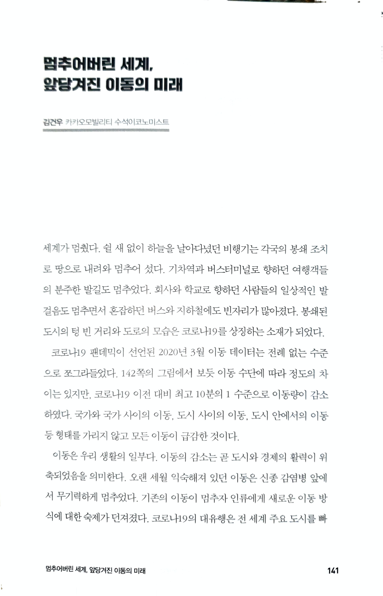

Abstract
LAB2050 기획, ‘코로나 0년’의 파국 속, 팬데믹 이후를 대비하는 한국 사회의 생존전략. 모두가 코로나19 이전의 삶을 회복하고 싶어 한다. 그런데 코로나 이전의 한국 사회는 과연 돌아갈 만한 곳이었을까? 『코로나 0년 초회복의 시작』은 이러한 질문과 함께 과거로의 회복이 아닌 미래를 위한 ‘초회복’을 준비해야 한다고 역설하는 책이다. 기본소득 논의를 활발히 펼치며 대한민국 대표 혁신 싱크탱크로 자리 잡은 LAB2050이 기획하고, 노동, 경제, 교육 등 각 분야 최전선에서 활발한 연구 활동을 펼치고 정책 설계에 참여하는 전문가 19인이 집필해 전문성을 높였다. 기본소득 전문가인 경제평론가 이원재 LAB2050 대표를 비롯해, 손꼽히는 공공보건정책 전문가 정혜주 고려대 교수, 언론이 가장 주목하는 디지털·IT 칼럼니스트 박상현 사단법인 코드 이사, 대중교통의 혁신을 이끄는 카카오모빌리티 디지털경제연구소의 김건우 수석이코노미스트 등 집필진들은 이 책에서 ‘코로나 0년’을 맞이한 한국 사회를 냉철하게 진단하고, 대담한 변화를 위한 제언을 담았다.
코로나 0년 초회복의 시작 - 이원재, 최영준 외 https://t.co/wbp1qansk2
— 어크로스의 문장들 (@acrossbook) September 4, 2020
저자 김건우 카카오모빌리티 수석이코노미스트 카카오모빌리티 디지털경제연구소의 수석이코노미스트, LAB2050 연구자문위원과 통계청 빅데이터-통계 전략 포럼 운영위원을 역임하고 있다. 저서로는 《2030 빅뱅 퓨처: LG경제연구원 미래 보고서》(공저), 《2018 대한민국 국가미래전략》(공저)가 있다.

)